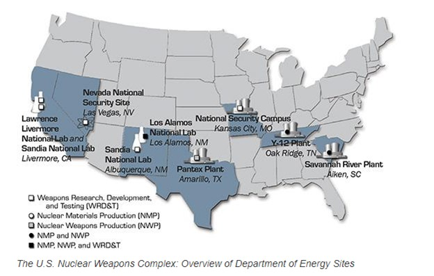
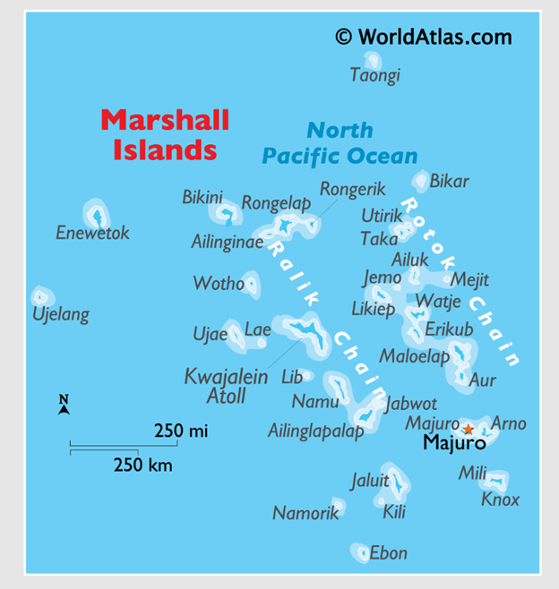
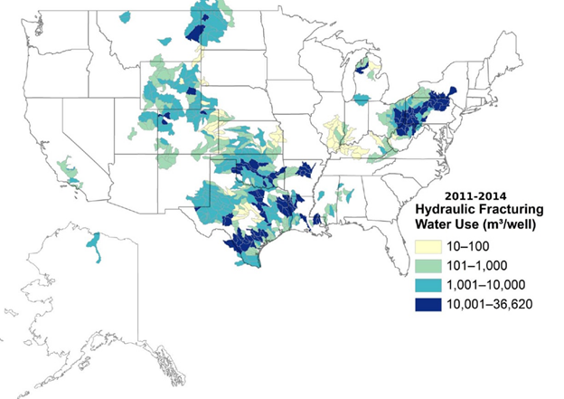

Associates:
Associates:
Mauro & Associates, LLC was incorporated in 2017 to provide health physics consulting services to the private sector and state and federal agencies concerned with the protection of workers, member of the public, and the environment
John Mauro, the owner of Mauro & Associates, LLC holds a PhD in health physics from New York University Medical Center (1973), has been a certified health physicist since 1976 (currently emeritus), and has 50 years consulting experience in the private sector. In 2004, Dr. Mauro was appointed by the governor of New Jersey as a Commissioner of Radiation Protection (CORP), a position he holds to this day. Dr. Mauro holds U.S. Patent US 10,031,060, which was issued on July 24, 2018, and U.S. Patent 10,247,653, which was issued on April 2, 2019. These patents are for a continuous real time monitor for airborne particles of depleted uranium (DU) in the respiratory range
Dr. Mauro served as a lifelong consultant to the Radiation Studies Section (RSS) of the Centers for Disease Control and Prevention (CDC) in matters related to the reconstruction of radiation doses to members of the public living in the vicinity of weapons complex facilities and also the derivation of the contamination levels and radiation exposures that members of the public and first responders might experience from fallout following a nuclear incident involving the detonation of an improvised nuclear device (IND) and a radioactive dispersal device (RDD).
He also served as a consultant to the National Institute of Safety and Health Administration (NIOSH) on matters related to the reconstruction of the radiation doses experienced by weapons complex workers who experienced one or more radiogenic cancers and were seeking compensation under the Energy Employee Occupational Illness Compensation Program Act (EEOICPA).
Dr. Mauro served as a consultant to a private sector client involved in Natural Resources Damages Assessment (NRDA) at Hanford, Los Alamos, and Oak Ridge weapons complex facilities. The work involved collecting data characterizing the radionuclide concentrations in environmental media, deriving the doses to aquatic and terrestrial organisms, and determining the degree to which these organisms have been or are being damaged due to radiation exposures associated with weapons complex operations.

Dr. Mauro served as a consultant to the people of the Republic of the Marshall Islands in matters related to fallout contamination and the associated radiation exposures and health effects experienced residents of the Northern Atolls. These investigations included an assessment of the costs associated with the cleanup of these atolls to levels that are found to be acceptable at Superfund sites in the U.S. and defending his work before the Nuclear Claims Tribunal and the subcommittees of the Congress of the United States.
Dr. Mauro served as a consultant the private sector in matters related to radiation exposures experienced by workers and members of the public exposed to elevated levels of naturally occurring radioactive material associated with the oil, gas, and fracking industries. His primary areas of investigation have been the assessment of exposures associated with radionuclides in produced water and with frack water management, including the beneficial reuse of these sources and water.
Earlier in his career, Dr. Mauro served as Director of Radiological Assessment and Health Physics Department of Ebasco Services Incorporated. In that capacity, he prepared and defended the in-plant and offsite radiological evaluations for the Environmental Reports and Safety Analysis Reports for 10 commercial nuclear power plants. He defended his work before the Nuclear Regulatory Commission (NRC), the Advisory Committee on Reactor Safeguard (ACRS), and the Atomic Safety and Licensing Board (ASLB)).